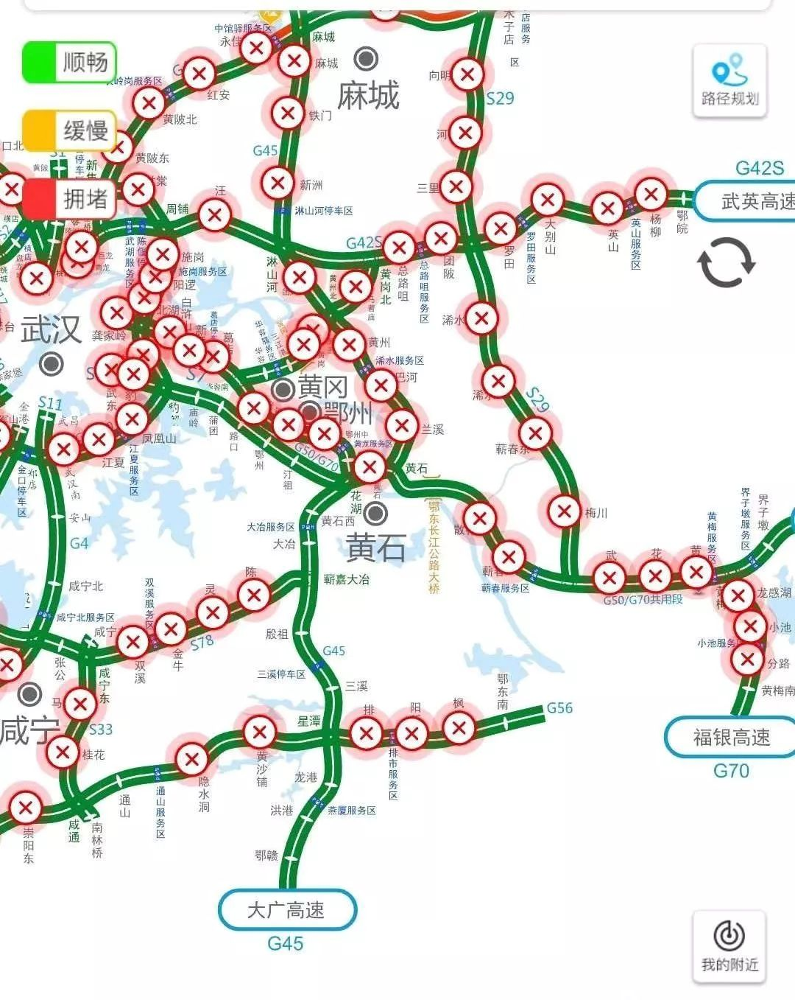
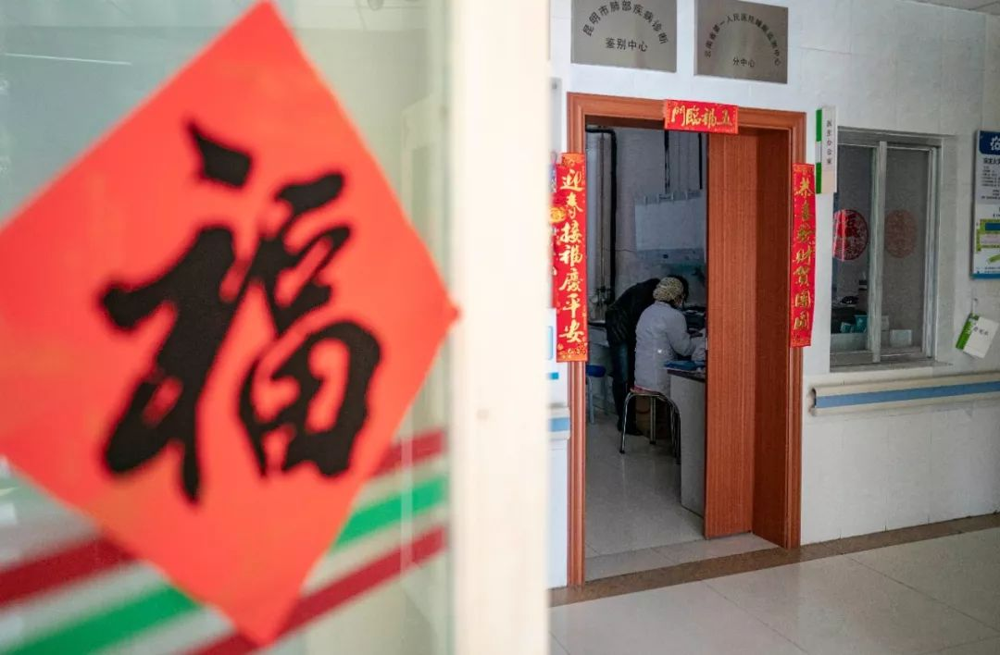
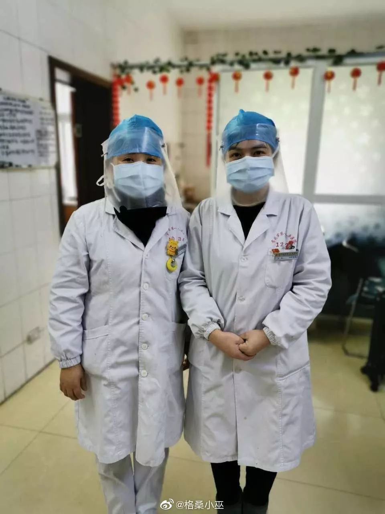
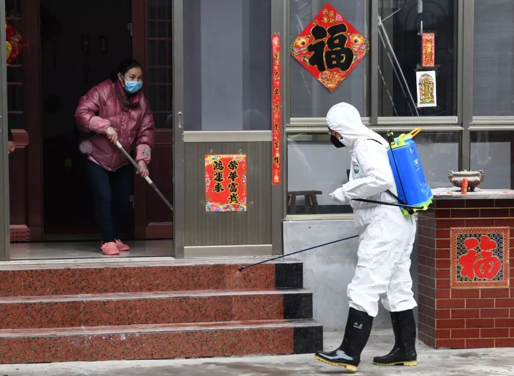

防疫物资之困丨单读征文
原文链接 备份链接 自新型肺炎疫情爆发以来，湖北乃至全国多个省份的医院因防疫物资短缺，向社会发出求助。而另一种声音却在说防疫物资是充足的，没有短缺。一时之间，防疫物资成为了薛定谔的猫。 今日来信的这位作者，便是自发为一线医院筹集防疫物资的 …


腊月二十九，我觉得再这样下去不行，得跟村长商量一下。
“村长，武汉肺炎都搞得‘封城’了，我们还有好多人聚众，要不要宣传……”话还没说完，听见电话那头，麻将粒儿磕得脆脆响。
陈家冲，一个平日里冷清得近乎空巢的农村，在今年春节前一条又一条的流感疫情通报中，一如往常地迎来了一年当中最为热闹的日子，一样地搞相亲、办酒席、催账款、打麻将。
而陈家冲所在的蕲春县，是一个距离武汉2小时车程的全国贫困县。即使所有人都“清楚得很”，自己的隔壁左右、叔伯亲戚，几乎每家每户都有从武汉回来、路过的人，或者大家都与武汉归人有过亲密接触。但这些，并不能限制乡亲们加入到一场人口的交叉大流动中来。

湖北麻城，“封城”进行中的麻城火车站（图/财经杂志）
大部分人照旧出去玩，吃喜酒、打麻将、走亲戚，“没这么严重吧”“我命贱”“农村空气好”，是最常听到的话。
直到1月23日24时，黄冈市“封城”。
同时，蕲春县“封城”。
大年初一一早，蕲春县各乡镇的离境道路，陆续封锁。
中午，各个村口的一条条路上，也堆起了高土堆，砌起了砖头、堆着大捆的树桩、停着打横的卡车。五花八门的“拦路”照片，在微信群里流传。以陈家冲为例，光是从村口到镇上，一条5公里的路，就有5道关卡。

鄂东南地区，大年初一路况简图
热闹，急转直下。
大家终于意识到了，情况严峻，得管起自己来了，尤其是一些大学生崭露头角，在卫生意识落后的乡村中，开始发挥“管家”的作用。
新年伊始，家家关门闭户，七八十岁的老人都说，“生平头一遭”。
而此时，一些关于病情的谣言也开始传了起来。“蕲春县一乡镇医院全院医务人员感染新型肺炎”，这样的谣言一传十，十传百，又很快被灭下。紧张感敲打着人们的心脏。

乡镇疫情地图
周晓平人生第一次那么频繁地接电话。手机响个不停，来电者不是记者，就是想要捐助物资的人。
他是刘河镇卫生院的负责人。
我给周晓平打过两次电话。他告诉我，“全院医务人员感染”是谣言，腊月二十九，他们卫生院收治了第1位高疑似病人，到正月初二下午，全院隔离、留院观察的疑似感染者是20人左右，有4名医务人员感染。
大年初二这一天，刘河镇卫生院遇到了一点小麻烦。
给他们卫生院做饭的饭店老板，疑似感染新型肺炎，居家隔离了。卫生院值班的医务人员，加上病患一共100多人，中午都没有饭吃。

1月26日，春节期间，医护人员依旧坚守岗位，忙碌在防控疫情一线（图/新华社）
刘河镇卫生院门口原本有一排小饭店，但愿意过年营业的只有这一家，卫生院之前给了夫妻俩一些普通的外科口罩，并承诺给他们随时检查。
49岁的老板娘不明白，说自己老公一直都戴着口罩的，怎么还是感染了。
现在只剩她一个人做不来饭，但中午还是炖了一锅鲫鱼汤，送到卫生院的病房门口去。
老板娘没有埋怨卫生院。她后来在微信上问我：“您能帮他们搞到防护服吗？医院这些小孩子，医生护士，不知道有多辛苦哦。”
这一天的中饭，后来是向镇政府食堂请求援助，他们才吃上的。但具体能吃多久，周晓平也不清楚。
我问他这几天吃的什么，他告诉我，除夕那天他们卫生院领导班子6个人，是一起在办公室吃的泡面。“大年初一早饭忙忘了，想起来就中午了。”
1月24日，华中科技大学附属同济医院的年夜饭，也是方便面蛋黄派等
整个蕲春县，15个乡镇，疫情各有不同，除了县城医院之外，最为紧张的，可能就是刘河镇卫生院和张榜镇卫生院。
这两家卫生院的辖区最大，医务人员数量分别在180人和260人左右，疑似感染病人也最多。
一个朋友想要联系医疗物资，捐助给张榜镇卫生院，可打了几个之后，负责人张旭明生气了。
“你不要再问我缺什么了，你现在给我什么我都要！你们这样的电话，我一天接一百个，可几天了毛都没看到，现在接你们的电话我很反感，但是我还是没法，我得接，我什么都要。”
朋友之所以找到张榜镇卫生院，是听说了大年初一，他们卫生院有一个放射科的医生，穿着一次性雨衣，戴着摩托车头盔给病人做检查。朋友听到之后流泪了，说：“一线乡镇医生好难。”
张旭明跟朋友辟谣，说没有这件事，“这是农村人做的事，医院不会。”
可有医务人员告诉我，是真的，他看到过那张照片。刚好那天下雨，医生在手术衣外面套的雨衣，戴的头盔，“张榜医院确实缺防护服”。

湖北孝感，网友“格桑小巫”称两位医护人员将文件袋拆下戴在头上以保护自己
在朋友之前，我联系过张榜镇卫生院负责人张旭明。
当时他告诉我说，张榜镇卫生院高疑似感染病人12个，最缺防护服，“4天前领过一次N95口罩，每人2个，现在已经没有了。”如今几天过去了，也许有民间捐助的物资还在路上，但他已经不愿意对外公布疫情状况。
狮子镇卫生院是一个相对较小的乡镇卫生院，暂时没有发现疑似感染病人，但是与刘河镇毗邻，属于高危地区。
他们的防护服、口罩使用也很紧张。负责人说，“一次性防护服消消毒，第二天接着用；有的外科口罩一戴戴两天、三天，知道没有用也要继续戴。”
在大年初一，我给蕲春县十余个乡镇卫生院打了电话，大大小小，都是类似的情况。
蕲春县的乡镇卫生院，他们往年，大都只是不专门开设“发热门诊”的小医院，只在特殊季节开设感染科。今年1月20日前后，也就是腊月二十六日前后，在钟南山院士说新型肺炎病毒“明确人传人”之后，各乡镇卫生院开始接到上级通报，紧急开设感染科，或是开设发热门诊，收治病人。
1月27日，武汉市武昌区粮道街昙华林社区干部通过手机安排工作（图/新华社）
他们原本好像是被催眠了，一醒来，情况就恶劣得难以应对。武汉“封城”，黄冈“封城”，蕲春“封县”，而整个县域内对抗疫情的医疗物资，缺乏得近乎裸奔。
县城定点医院的感染科很快住满。现在，乡镇卫生院只有重症病人才可以向上级汇报、转到定点医院，疑似病人向疾控中心申请，前来采样、确诊。
彼时，全中国的视线都在盯住武汉，但事实上，湖北不只有一个武汉。从武汉出走的500万人口，有很大一部分是回到了这样的小县城、小村落中。他们不止在蕲春县，也不止在黄冈市。

网格乡村保卫战
乡亲们，可能是管不住的。
1月23日，也就是腊月二十九这天，陈家冲的村长陈子衡，很快打起了精神。他统计完村里从武汉回来的人员名单，也要求给他们检测体温，做宣传教育，居家隔离，不让出门。
但还是有不听话的人。
村长打听到，那天一早，有陈家冲的村民在武汉“封城”之前，“逃”了回来，现在家里麻将桌围了三桌。
陈子衡决定去劝阻。他出门没有口罩，问村卫生所的熟人要了一个。结果去了聚众打麻将的村民家里，里里外外，他是唯一一个戴口罩的人。陈子衡叫他们不要再打了，大家笑笑算了，不听。
有人给陈子衡支招，打110，当他们的面打。陈子衡没有这么做。但是看到聚众麻将就打110，成了村里一句“流行语”。我邻居家的女孩，是一个大学生，在微信群里告诉同宗族里的人，她的爸爸弟弟都是从武汉回来的，谁陪他们打麻将，她就打110。
陈子衡原本想在村广播里喊，叫大家不要聚众，春节电话拜年。可是前阵子村里修电改线路，把广播线挖断了，他只能准备拿一副锣鼓，一条条路，一家家门口去喊。
四川眉山，为防止父母外出聚会，女儿拨打了110举报父母外出打牌
好在，2019年的除夕，一夜之间，这块鄂东南土地上的农村，村村通变成了村村“封”。
村与村的道路，被土堆、砖墙、大卡车、大树捆，从物理上隔断了。热情的村民们，像被卡在了一间又一间的小格子里。而乡镇卫生院，其实也是一个小格子，医务人员照看病人，同时自己被隔离，不能下乡。而县城的定点医院，又是另外的小格子。
几天的考虑，让我也慢慢理解了农村人在疫情初期的大流动。
毕竟是新年。
大家在外务工一年回来，趁着这个时候办酒席，热闹人多，收的礼金也多一些；而一些买卖人，平素日给人赊账，过年对方手头上有钱了，家家户户上门去“讨”钱，自己也回来好过年；至于打麻将，这可能是一年之中唯一一个打麻将不会被老婆骂的时候了，此时不打，更待何时。
这些事情，多少年来，已经演变成了农村的习俗，在意识到新型肺炎的厉害之前，他们固有的行为很难改变。

湖北黄冈，进村道路已经封闭，但背后“热烈欢迎在外乡亲回家过年”的条幅还没来得及撤下（图/财经杂志）
只是很多人没想到，这一次不让人打麻将的，不是老婆，而是家里的儿子和女儿。
一些受教育，爱上网的年轻人，面对“淡定”的父母“急得跳脚”，你说他没有卫生意识，他觉得你胆小、可笑，你叫他不要去拜年，他说你不懂人情世故、新年礼节。
年轻人们联系起来，在微信群聊里游说父母，甚至恐吓父母，“管”住他们。
年后，一道道的封锁，前所未有，让父母们也逐渐闻到了一些味道，他们也从朋友圈、村里、镇上、自己的朋友那里、政府发布的官方新闻里，接收到了一些信息。他们开始配合了。
我家里比较奇怪，最先配合的竟然是奶奶。她戴着口罩坐在灶台旁，只露出一双眼睛，跟我说：“你吃饭莫坐在陈优旁边，他武汉回来的。”陈优是我弟弟，她的大孙子。

1月27日，防疫人员在进行防疫消毒（图/新华社）
今天再给一些乡镇卫生院负责人打电话，他们的物资匮乏相比过年前，得到了一点缓解，物资领取通道在建立。
各个乡镇卫生院，每天下午向防控指挥部申报缺乏物资，得到专管副县长签字后，第二天中午可以获取一些物资。
一些比较大的乡镇卫生院，会得到物资的输送，但因为县里物资也不够，一次只能领一天的用量。而一些小卫生院的负责人员，有物资来就亲自去县城跑一趟。
他们要拿着一张通行证，通过一道又一道关卡，通过一条条空无人烟的街道，领到物资，再拿着另一张通行证回来。
这样的日子不知道还有多久，这些道路也不知会封多久。在一切结束之前，他们可能需要一直求救。
（文中受访者采用化名，陈家冲村地名采用化名）
作者 | 南风窗记者 陈舟
排版 | STAN
图片 | 部分来源于网络
南风窗新媒体出品

猜你还想看
围观
故事
热文
点击购买最新一期《南风窗》
原文链接 备份链接 自新型肺炎疫情爆发以来，湖北乃至全国多个省份的医院因防疫物资短缺，向社会发出求助。而另一种声音却在说防疫物资是充足的，没有短缺。一时之间，防疫物资成为了薛定谔的猫。 今日来信的这位作者，便是自发为一线医院筹集防疫物资的 …
原文链接 备份链接 医疗防护资源不足是常态，各地资源调配需平衡，“灯下黑”区域渐次光亮，但少数地区的疫情宣传依旧不到位 外地务工返乡者最担忧的问题是年后经济收入断流、地域歧视，担心节后可能无法返工 本文首发于南方人物周刊 文 | 本刊记 …
原文链接 备份链接 以下文章来源于南方都市报 ，作者南方都市报 25日，武汉封城进入第三日。据不完全统计，湖北至少18个城市（县）已采取出入管控、限制市内交通等封城措施。 新型冠状病毒感染确诊速度迅速提高，近四日的新增病例从149人跃增 …
原文链接 备份链接 自新型冠状病毒爆发以来，很多从武汉返乡的工作者、大学生接到了当地社区的电话，或者填写了关于个人信息的调查表。疫情当前，这一切都是为了“配合疫情防控、对抗病毒传播”。可是事情的发展渐渐走了样。大年初二一早，#武汉返乡人员 …
原文链接 备份链接 *************▲************* 大批量新国标标准的口罩正进入嘉兴“心脏仓” 。 （新华社/阿里巴巴供图/图） 全文共*4420*字，阅读大约需要*10*分钟。 “缺口以万为单位”，武汉市汉口医 …